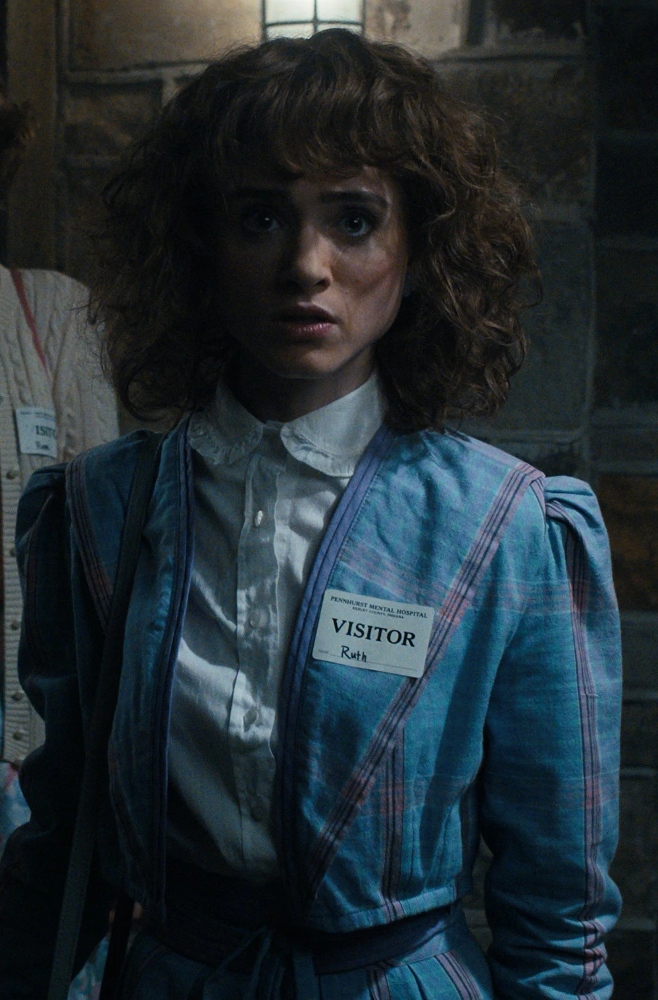

In the fall of 1984, Nancy's struggle to grieve over Barbara in silence eventually causes a rift
between Steve, where she eventually reveals in a drunken state that she doesn't love him.
Wanting revenge on the people responsible for unleashing the monster that killed Barbara, she
once again teams up with Jonathan and a journalist named Murray Bauman to expose Hawkins Lab. In
the process, she and Jonathan begin having attraction for one another, and eventual succumb to
their feelings. Returning to Hawkins, Nancy joins Jonathan and his mother in getting a demonic
creature possessing Will. A month later, Nancy finally receives closure for her best friend and
is now Jonathan's girlfriend.
In the summer of 1985, Nancy works at the Hawkins Post with her photographer boyfriend,
Jonathan, where she is treated with disrespect by her older male colleagues. Working late one
night at the paper, she answers a call about diseased rats in the town and secretly investigates
it with Jonathan. This would eventually cause the couple to be fired and a rift between Nancy
and Jonathan. But with some encouragement from her mother, Nancy picks the story back up and
discovers that the rats and Mrs. Driscoll's strange habits are linked to the Mind Flayer that
possessed Will. Reconciling with Jonathan, the two join their brothers and friends in once again
defeating the Mind Flayer. Three months later, Jonathan's family moves out of Hawkins and parts
ways tearfully with Jonathan.
In the spring of 1986, Nancy is an editor at the Hawkins High newspaper, The Weekly Streak.
She's in a long-distance relationship with Jonathan now that he's moved to California, but
despite their deep love for each other, neither of them can get away to meet up for spring
break.

Nancy Wheeler
